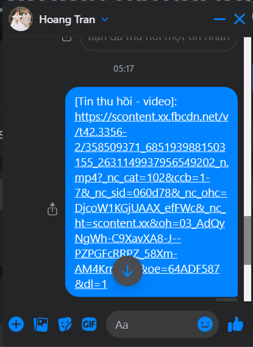
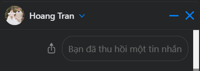
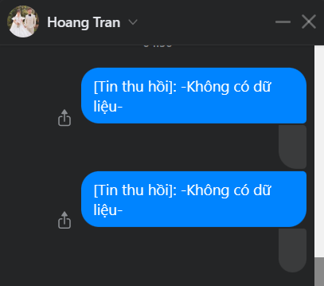

Phiên bản mới đã tới 07/2023
Nội dung tin nhắn thu hồi sẽ hiện ngay tại vị trí thu hồi.
Trường hợp bạn vẫn thấy giao diện cũ như hình dưới, thì chỉ cần tải lại trang là được nhé.
Trường hợp Tiện ích thấy tin thu hồi, nhưng chưa kịp lưu nội dung trước đó, thì sẽ hiện lỗi như sau.
Xem thêm extension mới ra lò của mình: Useful-script với gần 200 tính năng